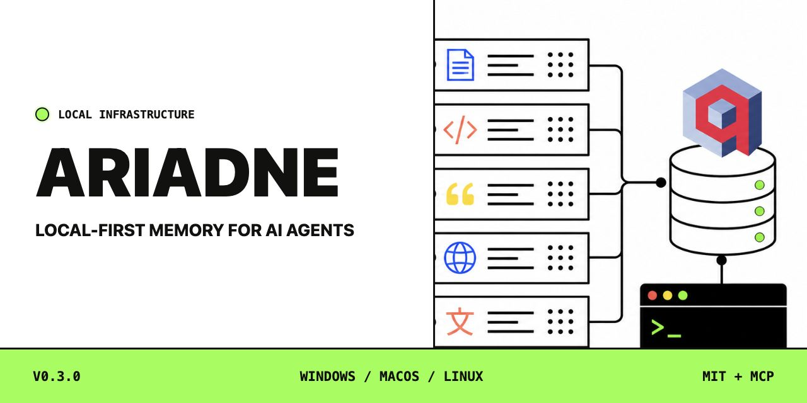

Immediate durable capture
Agents save important outcomes directly instead of waiting for SessionEnd or a separate remember command.
Local-first memory for AI agents that need to remember across sessions, languages, and concurrent work.
Go, Qdrant, Ollama, and bge-m3. No Docker, cloud account, API key, or embedded database lockups.
Completed decisions, fixes, releases, deployments, audits, and verified reports become durable memory as soon as they are known.
Agents save important outcomes directly instead of waiting for SessionEnd or a separate remember command.
Retrieve one known memory without embedding, approximate ranking, or unrelated results.
Search decisions, gotchas, references, or diary entries while retaining project and collection scopes.
Multiple MCP sessions share one loopback-only Qdrant service. Dense and sparse candidates are fused server-side with RRF.

Release archives are available for five targets. Installers keep Qdrant loopback-only and reuse existing infrastructure.
irm https://raw.githubusercontent.com/mclaut/ariadne/main/install.ps1 -OutFile install.ps1
powershell -ExecutionPolicy Bypass -File .\install.ps1Explicitly choose Claude Code, Codex, both, or core-only during setup.
Memories stay in plaintext Qdrant payloads bound to 127.0.0.1.
bge-m3 retrieves across more than 100 languages.
SHA-256 checksums, CycloneDX SBOM, and Sigstore bundle included.
Confirmed savings and recall overhead are reported separately.